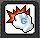

公會成立於 2020 / 07 / 25
並於2020 / 11 / 24 成為愛麗西亞伺服器第一個30等公會
公會偏向弄裝打王、練等
歡迎有興趣一起變強的夥伴們加入
聚集地位於 27頻 弓箭手村
公會的得力幹部們
有任何問題都可以直接密語詢問他們
會員可以隨時入場打分數
類似打拳擊機的玩法
公會沒有規定分數門檻
但分數不可以掛零
申請的朋友請確定可以配合
若有其餘疑問都可以在面試提出
公會內都有熱心高手可以指導
旗幟爭奪戰時間為每小時的30分~32分可進行入場
從公會視窗可以入場，進場後完成忍耐任務即可
總共有3張地圖每週輪換
至少需達成公會規定的最低分數
分數會視整體情況調整，有問題可以在面試提出
希望大家勇於參加以上兩種公會活動為的就是貴族公會技能
加入公會可以使用的貴族公會技能有
殺BOSS機器 : 30分鐘內攻擊Boss時，傷害增加30%，冷卻時間60分鐘
防禦不過是數字 : 30分鐘內攻擊時，無視敵人防禦30%，冷卻時間60分鐘
以公會之名 : 30分鐘內增加總傷害30%，冷卻時間60分鐘
猛烈的一擊 : 30分鐘內爆擊傷害增加30%，冷卻時間60分鐘
非常強力的技能，打王傷害upup
也是公會成員共同努力的成果
如果公會戰或旗幟有分數掛零的成員，會禁止使用技能
愛麗西亞唯一的60點貴族技能全滿公會
隨著公會貴族技能的改版，困王門檻下降，因此單吃的居多
需要團打的會員可以在公會內自行詢問組團，若想收藏勳章的可以告知幹部安排
本公會解放武器玩家超過70位 ( 持續增加中 )
會員們遇到問題可以詢問，公會內都有高手可以指導
公會目前只有使用 Discord
各位申請的玩家皆須配合
一切的公會公告、活動都會在那邊舉辦
如果害羞不敢開麥的朋友也可以進來看文字頻道就好唷 !